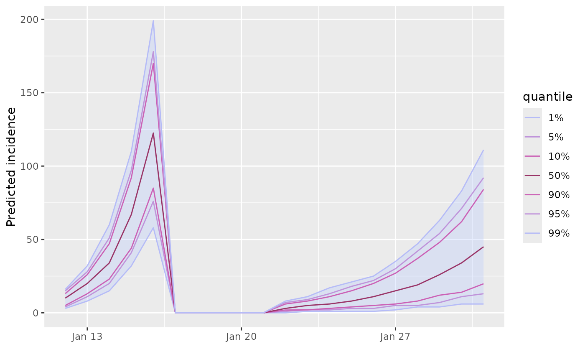

Add data of different projections objects
Source:R/merge_add_projections.R
merge_add_projections.RdThis function adds counts from several `projections` objects, making sure that they all use the same dates, adding rows of '0' where needed. Simulations (columns) are recycled when needed if some objects have less simulations than others. The same operation is implemented by the `+` operator.
Examples
if (require(incidence)) {
## make toy data and projections
set.seed(1)
i <- incidence::incidence(as.Date('2020-01-01') +
sample(1:20, 50, replace = TRUE))
si <- c(0.2, 0.5, 0.2, 0.1)
x_1 <- project(x = i[1:10],
si = si,
R = 3.5,
n_sim = 200,
n_days = 5)
x_2 <- project(x = i[11:20],
si = si,
R = 1.8,
n_sim = 300,
n_days = 10
)
## check simulations
x_1 # first type
x_2 # other simulations
y <- x_1 + x_2 # add simulations
plot(y)
}
#> Loading required package: incidence
